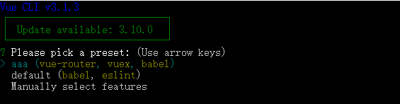
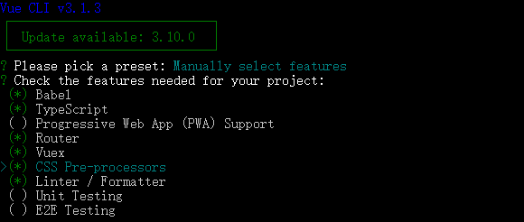
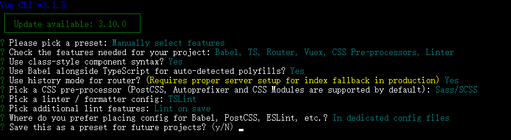
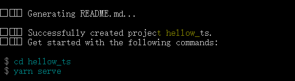

vue create xxx
上面的第一条，也就是 aaa 这一个选项在你第一次创建项目的时候是并不会出现的，只有你第一次创建完成项目后回提示你保存为默认配置模板，下次新建项目的时候就可以使用你选用的配置快速新建项目了，不需要再重新选择配置项目了。
第二条选项便是 vue cli 3 默认的项目模板，包含 babel 和 eslint。
第三条选项便是自主选择你项目所需的配置。
这里由于默认模板没有啥展示的必要所以我们便选择手动配置。
选择项目配置：

这里我们可以选择我们需要的配置选项，选择完成后回车进入下一步。
在选择功能后，会询问更细节的配置

TypeScript：
是否使用class风格的组件语法：Use class-style component syntax?
是否使用babel做转义：Use Babel alongside TypeScript for auto-detected polyfills?
Router:
1.是否使用history模式：Use history mode for router?
CSS Pre-processors：
选择CSS 预处理类型：Pick a CSS pre-processor
Linter / Formatter
选择Linter / Formatter规范类型：Pick a linter / formatter config
选择lint方式，保存时检查/提交时检查：Pick additional lint features
Testing
选择Unit测试方式
选择E2E测试方式
选择 Babel, PostCSS, ESLint 等自定义配置的存放位置 Where do you prefer placing config for Babel, PostCSS, ESLint, etc.?

创建成功。
vue-cli3脚手架生成项目目录说明
│ .browserslistrc
│ .gitignore
│ .postcssrc.js // postcss 配置
│ babel.config.js
│ package.json // 依赖
│ README.md // 项目 readme
│ tsconfig.json // ts 配置
│ tslint.json // tslint 配置
│ vue.config.js // webpack 配置（~自己新建~）
│ yarn.lock
│
├─public // 静态页面
│ │—favicon.ico
│ │—index.html
│
├─src // 主目录
│ ├─assets // 静态资源
│ │ logo.png
│ │
│ ├─components
│ │ HelloWorld.vue
│ │
│ │─views // 页面
│ │ About.vue
│ │ Home.vue
│ │
│ │ App.vue // 页面主入口
│ │
│ │ main.ts // 脚本主入口
│ │
│ ├─router // 路由配置
│ │ index.ts
│ │
│ │ registerServiceWorker.ts // PWA 配置
│ │
│ │ shims-tsx.d.ts
│ │ shims-vue.d.ts
│ │
│ │
│ ├─store // vuex 配置
│ │ index.ts
│ │
│ ├─typings // 全局注入（~自己新建~）
│ │
│ ├─utils // 工具方法(axios封装，全局方法等)（~自己新建~）
│
│
└─tests // 测试用例
├─e2e
│ ├─plugins
│ │ index.js
│ │
│ ├─specs
│ │ test.js
│ │
│ └─support
│ commands.js
│ index.js
│
└─unit
HelloWorld.spec.ts last 3 ie versions,
not ie <= 8其它配置，请去https://github.com/browserslist/browserslist。npx browserslist在项目目录中运行以查看查询选择了哪些浏览器
// 关闭console
"no-console": [true, "log", "dir", "table"]
// tslint的函数前后空格：
"space-before-function-paren": ["error", {
"anonymous": "always",
"named": "always",
"asyncArrow": "always"
}]
// tslint分号的配置：
"semicolon": [true, "never"]其它规则：https://palantir.github.io/tslint/rules/
// main.ts文件
router.beforeEach((to: any, from: any, next: any) => {
if (to.name === 'login') {
next({name: 'home/index'})
} else {
next()
}
})npm i axios --savesrc下新建axios.d.ts axios.config.ts文件
//axios.config.ts
import axios, { AxiosInstance } from 'axios'
declare module 'Vue/types/vue' {
interface Vue {
$axios: AxiosInstance
}
}// main.ts文件import Vue from 'vue';
import axios from 'axios';
Vue.prototype.$axios = axios;
/**
* 创建 axios 实例
*/
const service = axios.create({
timeout: 3000,
baseURL: 'http://xxx',
});
/**
* req 拦截器
*/
service.interceptors.request.use((config: object): object => {
return config
}, (error: any): object => {
return Promise.reject(error)
});
/**
* res 拦截器
*/
service.interceptors.response.use((response: any) => {
const res = response.data;
if (res.error) {
if (process.env.NODE_ENV !== 'production') {
console.error(res);
}
return Promise.reject(res);
}
return Promise.resolve(res);
});// main.ts
import './axios.config';├── index.html
├── main.js
├── components
│ ├── App.vue
│ └── ...
└── store
├── index.ts # 我们组装模块并导出 store 的地方
├── actions.ts # 根级别的 action
├── mutations.ts # 根级别的 mutation
└── modules
├── cart.ts # 购物车模块
使用：
module形式store中，业务逻辑尽量少放，项目全局方法可以放入。例如：cookie, global cache action(异步): api的操作， 调用方式：this.$store.dispatch(functionName, data)
mutations(同步): dom相关操作，方法名一般使用常量，
调用方式: this.$store.commit(mutationsName, data)
this.$store.getters[XXX] => this.$store.getters[namespaced/XXX]
this.$store.dispatch(XXX, {}) => this.$store.dispatch(namespaced/XXX, {})
this.$store.commit(XXX, {}) => this.$store.commit(namespaced/XXX, {})
//store/index.ts
import Vue from 'vue';
import Vuex from 'vuex';
import cart from './modules/cart';
Vue.use(Vuex);
export default new Vuex.Store({
modules: {
cart,
},
});// cart.ts
import {ActionContext} from 'vuex';
export interface State {
token: string;
}
const state: State = {
token: '',
};
// getters
const getters = {
toUpperToken: (state: State) => {
return state.token.toUpperCase();
},
};
// actions
const actions = {
setTokenAsync({ commit }: ActionContext<State, State>, payload: any) {
setTimeout(() => {
commit('setToken', payload);
}, 1000);
},
};
// mutations
const mutations = {
setToken(state: State, payload: any) {
state.token = payload;
},
};
export default {
namespaced: true,
state,
getters,
actions,
mutations,
};https://cli.vuejs.org/zh/config/#vue-config-js所列出的属性，可以直接配置。其它属性可以通过configureWebpack、chainWebpack配置。